Five Machines, Four Languages, One Wafer
This is a small semiconductor handling cell in a lab. A four-axis SCARA, a six-DoF cobot, a stepper conveyor with a camera and an Allen-Bradley Micro820 work together to move 100 mm silicon wafers out of a stacked cassette, past an inspection station and onto a deposit platform, one shelf lower every cycle. The cell was first built and commissioned on different hardware. My job was moving it onto new robots, and that turned up three problems I had to solve along the way. The deposit fixture sits at 393.8 mm of a 400 mm reach, where only one elbow solution stays inside the joint limits. The ladder actually running on the PLC turned out to be quite different from the one in the manual. And the two-wire handshake between the machines needed designing so that every signal fails in a direction I chose on purpose.
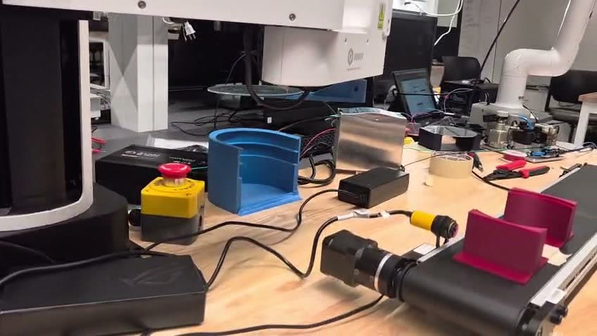
Easy to describe. Moving it onto new hardware was the real work.
What the cell does fits in a few lines. A SCARA pulls a wafer out of a vertical cassette and lays it in a cradle on a conveyor. The belt carries the cradle past a camera that checks the wafer is there. A cobot lifts it off the cradle and sets it on a deposit platform. Then the belt comes back and the whole thing repeats one shelf lower. A Micro820 PLC triggers every step and hears back when each one is done. Here it is running from start to finish:
Getting that flow working again on the hardware we actually had became the heart of the project. Three of the five subsystems are different from the ones the cell was first built around, and none of the three is a simple swap.
| Subsystem | Originally | Here | Consequence |
|---|---|---|---|
| SCARA | Dobot M1, Python dType | Dobot M1 Pro, Lua in DobotStudio Pro 2.8.3 | No SetArmOrientation equivalent |
| Cobot tool | DH PGE 8 parallel gripper | Vacuum cup on a 24 V solenoid manifold | Grip becomes a sensed quantity |
| Fixtures | as originally taught | Re-taught after the rack was moved | Insertion axis is now X, not Y |
That means every absolute coordinate in the original program is wrong on this cell. On top of that, the new API dropped the one call the original program used to tell the arm which configuration to use, and that turned out to matter a lot.
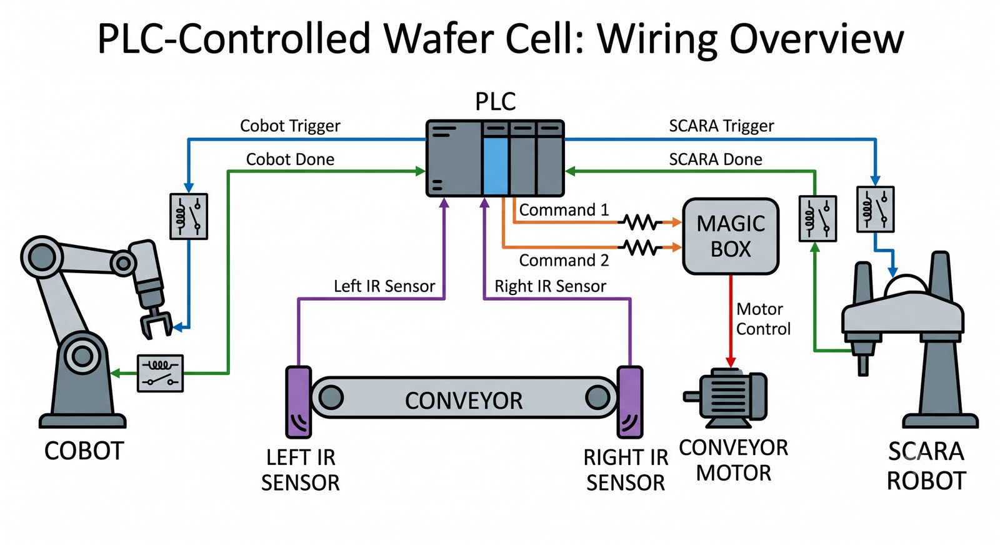
| Element | Device | Programmed through |
|---|---|---|
| SCARA | Dobot M1 Pro, 4 axes, 400 mm reach | Lua in DobotStudio Pro 2.8.3 |
| Cobot | Elephant Robotics Pro600, 6 DoF, 600 mm, 3 kg | RoboFlow over VNC · pymycobot |
| Conveyor | Dobot Magic Box extended I/O, stepper on port 0 | Python DobotDllType over COM3 |
| Inspection | USB camera, index 0 | OpenCV HoughCircles |
| Coordination | Allen-Bradley Micro820 2080-LC20-20QBB | Connected Components Workbench |
Four programming environments, and no two of them speak the same language. That's normal when you integrate a small cell, and it's exactly why I kept the PLC's job narrow. It's the only piece that sees the whole cell, so it handles the signalling and nothing else.
Why a PLC here at all
The reason is timing you can count on, not computing power. A Python script on a PC is at the mercy of the operating system's scheduler, garbage collection and whatever else the computer happens to be doing. A PLC runs its program on a scan that is bounded and the same every time. So the Micro820 gets exactly the jobs that need that: watching the sensors, sending timed trigger pulses, latching done reports and running the operator interface. It gets none of the jobs that don't.
Knowing where the tool is doesn't tell you how the arm is bent.
The M1 Pro is a SCARA, with two rotating links in the horizontal plane, a vertical lead screw
and a wrist. Because the third axis moves in a straight line, J3 is Z in
millimetres. That's handy in a very practical way, since changing J3 alone moves
the tool straight up or down and can't swing it into anything. With L1 = L2 = 200
mm from the dimension drawing, the forward kinematics are:
Y = L1·sin J1 + L2·sin(J1+J2)
Z = J3, R = J1 + J2 + J4 (mod 360°)
I checked the model against live readings from the panel before trusting it with anything. Plugging in J1 = 19.02°, J2 = 29.37° and J4 = −159.79° gives (321.9, 214.7) at R = −111.40°, which matches the taught rack approach point to the decimal.
Running them backwards is where the trouble starts. For a two-link planar arm, any point it can reach at radius ρ has two solutions, told apart by the sign of J2: elbow left or elbow right. Both are valid. The controller's solver picks one and doesn't tell you which.
The deposit fixture sits at ρ = 393.8 mm of the arm's 400 mm reach, within 1.5% of fully
stretched out. Two things happen that close to the edge. The Jacobian gets badly
conditioned, so tiny Cartesian steps need big joint swings and the arm moves far more than
the command seems to ask for. And the one that really mattered: only one branch
stays inside the joint limits. The controller kept solving for the other one, so
every Cartesian command to the fixture came back with "Incorrect motion point for MovJ
instruction".
Working it out for the traverse point the hardware actually rejected, (113.3, 214.7) at R = −111.4°, the two branches look like this:
| Branch | J1 | J2 | J4 | Verdict |
|---|---|---|---|---|
| A (elbow +) | +9.54° | +105.27° | +133.79° | within all limits |
| B (elbow −) | +114.81° | −105.27° | −120.94° | J1 past ±85° |
The limits I check against before any move: J1 ±85° (the one that actually bites), J2 ±130°, J3 5 to 245 mm, J4 ±360°, an outer reach of 400 mm and an inner dead zone of 153 mm.
CORRECTIONMy first analysis rejected both branches, and it was wrong
I had treated J4 = −226.3° as past the wrist limit. But J4 on the M1 Pro covers ±360°, and −226.3° is the same wrist angle as +133.7°, because R only means anything modulo 360°. Fixing that limit changed the diagnosis in an important way. The point isn't unreachable. It's reachable on exactly one branch, and the controller was picking the other. That also explained something the "unreachable" idea never could: the operator can reach the fixture by hand-guiding the arm but not by jogging it in Cartesian mode, because hand-guiding moves the joints directly and never asks the solver to choose.
Three possible fixes, and the one I picked
- Linear interpolation. Rejected. A straight-line move needs every point along the way to solve, which is even stricter than a joint move. It would fail harder, not more gently.
- Choosing the configuration explicitly, the way the original M1 program
did with
SetArmOrientation. Not possible, because the Lua API has nothing like it. - Commanding the fixture side in joint coordinates. This is what I went with. A taught set of joint angles is a configuration, so there's nothing to solve and nothing to be ambiguous about. The rack side stays Cartesian, because every shelf needs a new Z, and Cartesian coordinates are the natural way to express that.
| # | Step | Frame | Pose |
|---|---|---|---|
| 1 | Home | joints | J_HOME |
| 2 | Cassette approach | Cartesian | x0, y0, z(n), r0 |
| 3 | Fork inserted, three steps | Cartesian | −X |
| 4 | Lift and withdraw | Cartesian | +Z, then +X |
| 5 | Traverse to fixture | joints | J_TRAVERSE, then J_ABOVE |
| 6 | Deposit, then clear the prongs | joints | J_DEPOSIT, then J_WITHDRAWN |
| 7 | Return home | joints | J_TRAVERSE, then J_HOME |
Step 6 needs two moves, and not for style. Lowering the wafer leaves the
fork sitting under it, so the prongs have to slide out along their own axis or the wafer
gets dragged along. The wafer counter only goes up after J_WITHDRAWN, never after
J_DEPOSIT, so a cycle that gets aborted can't pad the count.
The taught poses, and what they check
The five poses were taught by hand-guiding the arm, and I read them back from the controller with a probe script instead of copying numbers off the pendant, which rules out a whole category of typos. Each one also carries its Cartesian equivalent from forward kinematics, worked out by the program at startup. That bit of redundancy costs a few lines, and it caught two badly taught poses before they ever reached the hardware.
| Pose | J1 | J2 | J3 | J4 | X | Y | Z | R |
|---|---|---|---|---|---|---|---|---|
| J_HOME | 50.16 | 45.17 | 187.82 | 103.37 | 109.6 | 352.7 | 187.8 | −161.3 |
| J_TRAVERSE | 63.65 | 49.28 | 166.69 | 267.51 | 10.8 | 363.4 | 166.7 | 20.4 |
| J_ABOVE | 55.33 | 28.74 | 166.69 | 296.37 | 134.4 | 363.4 | 166.7 | 20.4 |
| J_DEPOSIT | 55.33 | 28.74 | 89.19 | 296.37 | 134.4 | 363.4 | 89.2 | 20.4 |
| J_WITHDRAWN | 64.64 | 49.38 | 76.53 | 266.42 | 4.2 | 363.4 | 76.5 | 20.4 |
- Every pose has J2 > 0. All five are on branch A, the same branch as the rack side, so the arm never flips its elbow anywhere in the cycle. If a pose came back on branch B, that meant teaching it again, not running it.
- Four poses share Y = 363.4 mm. Traverse, approach, deposit and withdrawal
all sit on one line, which is exactly what pulling the fork straight out along X should give.
J_WITHDRAWNpulls back from X = 134.4 to X = 4.2 mm with Y unchanged, a 130.2 mm slide along the prongs. - Home sits right above the rack approach point, at (109.6, 352.7), which is why dropping into the cassette is a pure Z move. I deliberately didn't use the factory home. All joints at zero puts the arm straight out at X = 400, Y = 0, with the screw below its 5 mm software limit and the fork sticking out across the bench.
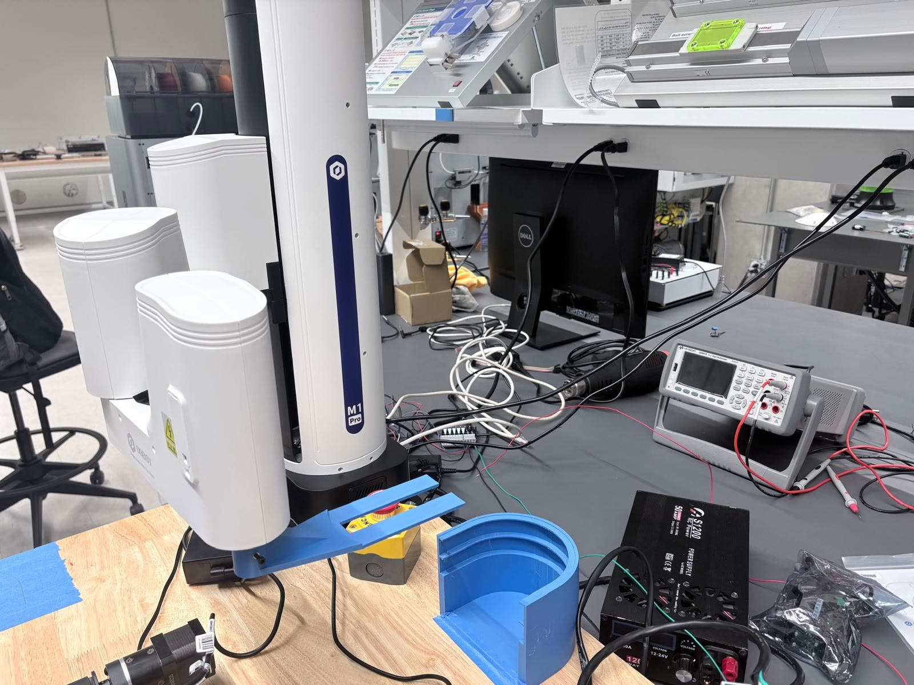
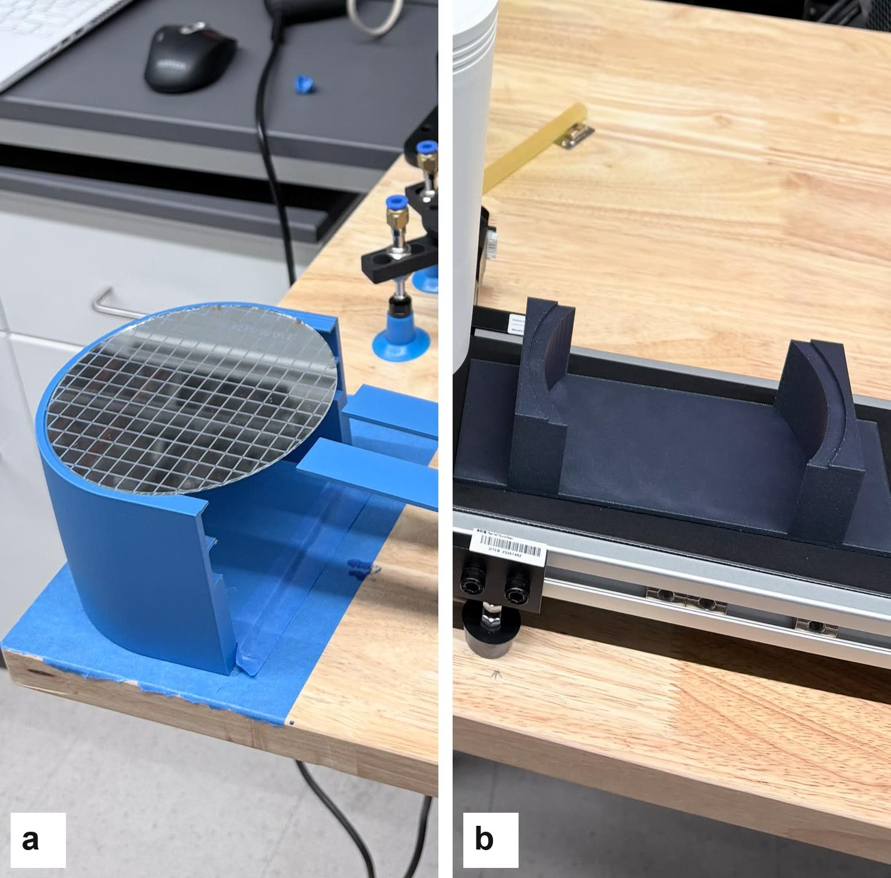
The cassette is the rack from the manual, so its inside dimensions come from a spec rather than a measurement. Even so, the program won't run more than one cycle until someone has physically confirmed the shelf spacing, because every cycle after the first relies on it. The measured lift of 13.0 mm fits a 20 mm spacing. It clears the lip of the wafer's own shelf and stays well below the shelf above.
Safety checks: refuse instead of trying
- Poses nobody taught stop the run.
{0,0,0,0}isn't a harmless placeholder. It's a real pose, with the arm straight out at the bottom of the Z screw. Any joint move to an untaught pose ends the run. - Every target is checked against the joint limits and the reach and dead zone before it's sent, so a bad point gets reported by name instead of the controller rejecting it halfway through a move.
- The run plan is printed and checked before anything moves. A wafer count that would go past the bottom of the cassette stops the run.
- Homing happens in stages. If the arm isn't near home, it first backs straight out of the cassette, then rises, then moves its joints home. Rising first would hit the shelf above.
- After a fault the arm doesn't move. Once something aborts, the arm might be somewhere a joint move can't safely get out of, and moving anyway is how a small problem turns into a crash.
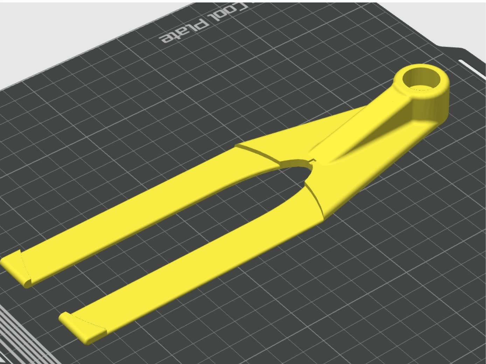
The ladder in the manual isn't the ladder that runs.
The controller is a 2080-LC20-20QBB, with twelve digital inputs, seven transistor outputs,
four analog inputs and one analog output. It has two isolated output groups.
O-00 to O-03 share CM0, and O-04 to
O-06 share CM1, and that's what lets the conveyor outputs and the
robot trigger outputs sit on separate references.
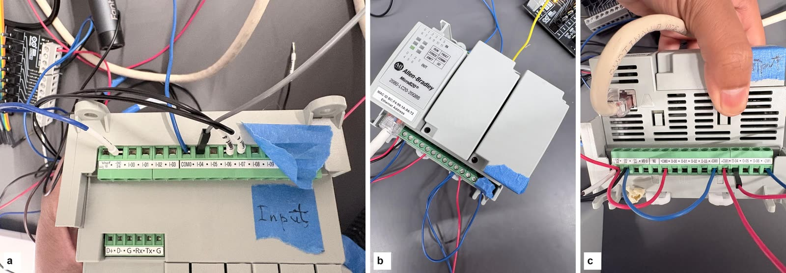
I pieced the real I/O map together from the project's own global variable table and checked it against the ladder source. The rungs use aliases instead of raw addresses, and getting those right is most of what makes a ladder readable.
| Point | Alias | Role |
|---|---|---|
| DI_06 | Start_Switch | start pushbutton |
| DI_07 | Stop_Switch | stop, measured as normally closed |
| DI_04 | SCARA_DO | SCARA done, read inverted (NPN, active LOW) |
| DI_05 | Cobot_DO | cobot done, read direct (active HIGH) |
| AI_00 | IR_SCARA_End | IR sensor at the cassette end, WORD, thresholded |
| AI_01 | IR_Cobot_End | IR sensor at the cobot end, WORD, thresholded |
| DO_04 | DI_to_SCARA | 2 s trigger pulse to the SCARA |
| DO_05 | DI_to_Cobot | 2 s trigger pulse to the cobot |
| DO_00 | Conv_SCARA_Side | conveyor, negated coil, idles HIGH |
| DO_01 | Conv_Cobot_Side | conveyor, negated coil, idles HIGH |
| AO_00 | Conveyor | provisioned, not referenced by any rung |
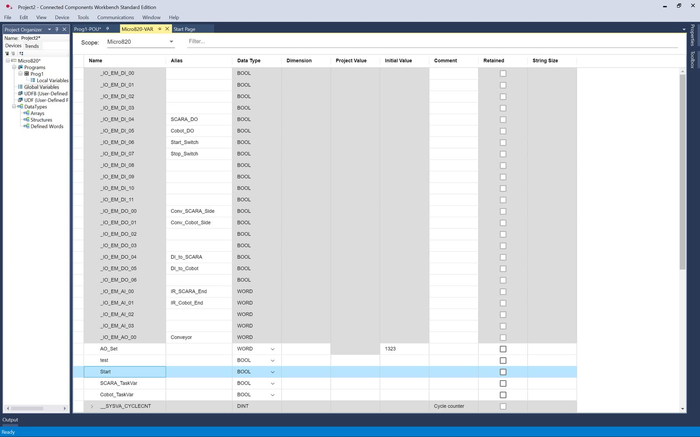
WORD, so the infrared sensors are read as raw counts and compared against a number, not treated as on or off. Only ten points are used, which leaves the rest free for the handshake program. And nothing in the table is marked retained, which is why the detection threshold disappears on every download.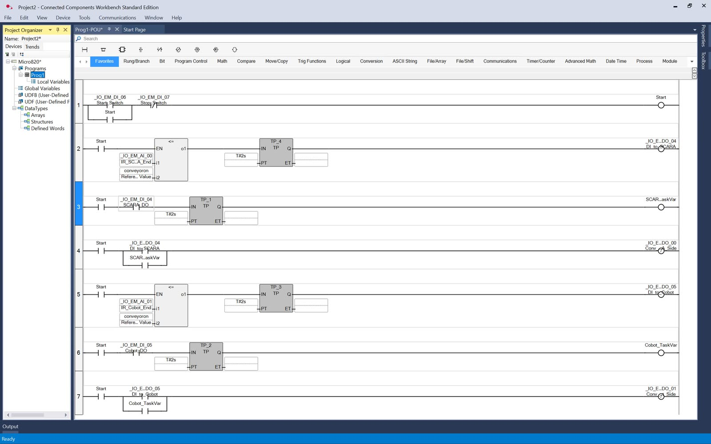
| # | Function |
|---|---|
| 1 | Stop ∧ (Start ∨ Start_latch) sets Start. Seal-in latch. |
| 2 | Start ∧ (AI_00 ≤ threshold) fires TP 2 s on DI_to_SCARA |
| 3 | Start ∧ ¬SCARA_DO fires TP 2 s on SCARA_TaskVar |
| 4 | Start ∧ (DI_to_SCARA ∨ SCARA_TaskVar) drives negated Conv_SCARA_Side |
| 5 | Start ∧ (AI_01 ≤ threshold) fires TP 2 s on DI_to_Cobot |
| 6 | Start ∧ Cobot_DO fires TP 2 s on Cobot_TaskVar |
| 7 | Start ∧ (DI_to_Cobot ∨ Cobot_TaskVar) drives negated Conv_Cobot_Side |
AUDITTyping in the published listing would have deleted the stop button
The ladder printed in the course manual, and the PROG1.txt that comes with it,
is an old leftover and not the program that runs. The real source is the project's own
Prog1.stf. If I had copied the manual's version, the stop input would be gone
completely, and two of the robot trigger rungs would conduct whether or not anyone had
pressed start.
| Aspect | Published | As built |
|---|---|---|
| Stop input | absent | DI_07, seal-in latch |
| Rung gating | two rungs ungated | every rung gated on Start |
| Timers | TON, six instances | TP pulse, four instances |
| Naming | TRIGERA to TRIGERD | functional aliases |
| Conveyor coils | "normally high" | negated coils |
Three choices in this ladder worth pointing out
- Pulse timers instead of on-delay timers. A
TPputs out a pulse of fixed length when its input rises and ignores whatever the input does after that. ATONwould follow its input and let go the moment the input dropped. These rungs exist to send a trigger of guaranteed length to a robot that only checks its input every so often, soTPis the right tool. - The two-second pulses are a deliberate safety margin. A Micro820 scan takes milliseconds, so a two-second signal is about a thousand times longer than any uncertainty in when the receiver looks. Nothing in this cell needs edge detection. The price is throughput, and on a lab cell that price is worth paying.
- Negated conveyor coils mean those outputs sit high and drop low to act, so losing power stops the belt instead of starting it.
FAULTThe start button did nothing at all, even though everything else was right
The panel's stop button is wired normally closed, so its input reads TRUE at
rest and FALSE when pressed. That's the fail-safe way to do it, because a cut wire looks like a
press. But it means the stop shows up as a normally open ] [ contact on
every rung, which looks wrong until you say it out loud: conduct while the stop button is
not pressed. We had it backwards for one download. Rung 1 couldn't conduct at all, and
pressing start did absolutely nothing.
GOTCHAThe detection threshold gets wiped on every download
conveyoron, the value the two analog rungs compare against, goes back to its
default every time the project is downloaded, and someone has to type it in again by hand.
Nothing in the global table is marked retained. It fails silently, too. The cell either never
triggers or triggers nonstop. A related trap that's just as hard to spot from the symptom: the
controller sits at the link-local address 169.254.19.93, so the programming PC's
network adapter has to be on 169.254.x.x / 255.255.0.0. Otherwise the Micro820
never shows up in the browse tree, and it looks like a dead controller instead of a network
setting.
Two wires carry the whole conversation.
M1 Pro DO10 through the opto board to Micro820 I-04 "wafer placed"
Both robot signals are on the M1 Pro's second terminal block. The first block's labels only go up to channel 8, which is a small trap of its own. Written as structured text, the handshake I designed is just three lines:
Three properties hold the whole thing up, and the simulator below runs the real logic so you can break each of them yourself:
- The PLC has to drop its request when it sees the done pulse. The arm waits for its start input to fall before it will think about another wafer, so one long signal can't be mistaken for several requests. If the request stays high, the arm finishes its move and then waits forever, which from the outside looks exactly like a finished run.
- I made the start signal active HIGH on purpose. That way a dead or unplugged PLC output reads as no request. With active LOW, a broken wire would read as "take another wafer, forever", which is the wrong way to fail.
- The request isn't permission to keep running. The arm only checks its start input once, at the start of each wafer. Dropping the request mid-cycle means "don't start another one" and nothing more. To stop an arm that's moving, use the E-stop.
(Start ∨ Scara_in) and not Scara_in on
its own. Switch the reset term and hold START again to watch the same cell run away.
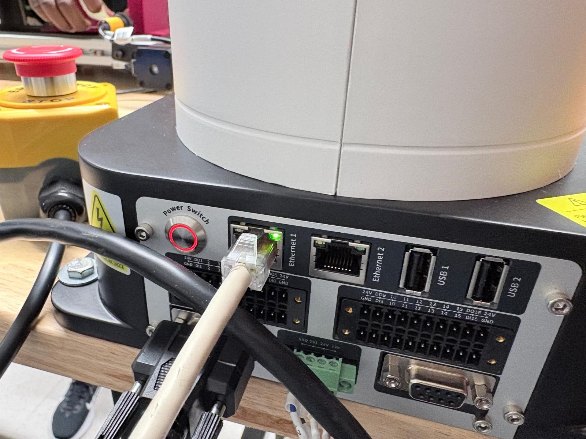
The same sensor has to mean two different things.
A stepper drives the belt through the Dobot Magic Box extended I/O module, which offers a motor port and general digital I/O through the same Python API that runs the arm. That's one connection and one library for two subsystems. The direction is just the sign of the speed command and stopping is a speed of zero, so nothing mechanical has to change over. Two infrared photoelectric sensors spot the cradle at each end of the belt, both NPN devices whose outputs go low when they see something.
What the belt does depends on the sensor reading and what the belt is already doing, not the sensor alone. That's how the same sensor can mean "go" on the way out and "stop" on the way back:
| Trigger | Belt state | Action |
|---|---|---|
| Load-end sensor low | stopped | run forward; arm the camera |
| Load-end sensor low | reversing | stop; ready for next wafer |
| Pick-end sensor low | forward | stop; cobot picks here |
| Pick-end sensor low | stopped | run reverse; return belt |
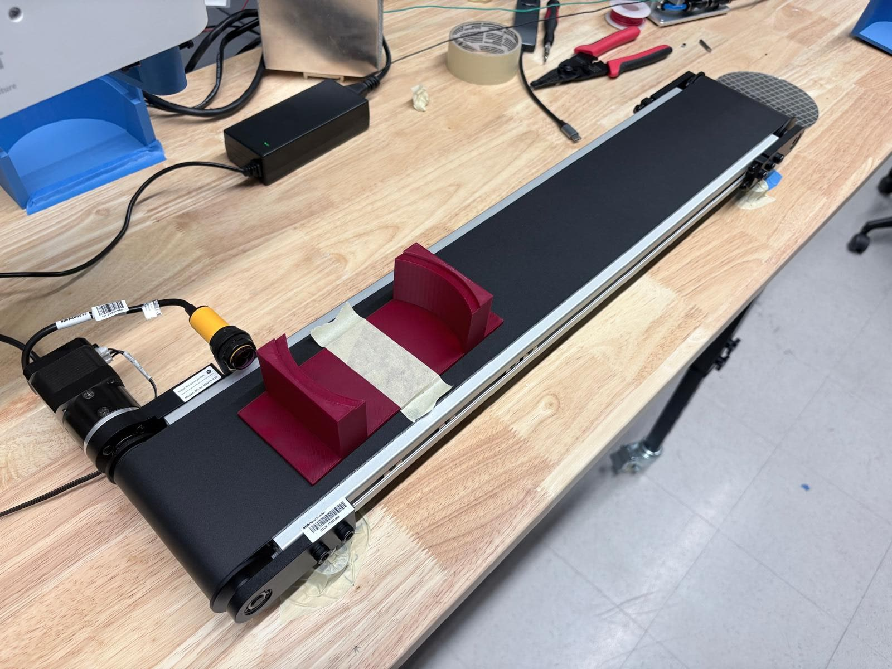
The camera checks the wafer is there, and that's all I claim for it
Each frame gets turned to greyscale, median blurred to hide the speckle from the belt's texture, and run through a circular Hough transform tuned to how big the wafer looks. The first time a cycle sees a wafer, the belt stops, waits a moment to settle, saves a frame to a numbered file and starts again. Two latches keep that sane in a loop. A first-run flag ignores detections until a wafer has really been loaded, so round things in the background can't trigger it. An already-photographed flag allows one picture per wafer and resets when the load-end sensor fires again. Without them, the camera would keep photographing the same wafer the whole time it sat in view, stopping the belt every time.
The transform checks that a wafer is present and roughly the right shape. It is not a defect detector. Real inspection would need controlled lighting and a calibrated scale, and this bench has neither.
A gripper is just open or closed. A vacuum tool is a whole circuit.
The Pro600 lifts the wafer off the cradle and sets it on the deposit platform. It's
programmed in RoboFlow, a block-based environment that runs on the controller's own Linux
system and is reached over remote desktop. The cell program switches between absolute joint
moves and tool actions, and two I/O blocks are its entire connection to the rest of the
cell: a Wait on digital input 1 and a Set that pulses digital
output 1.
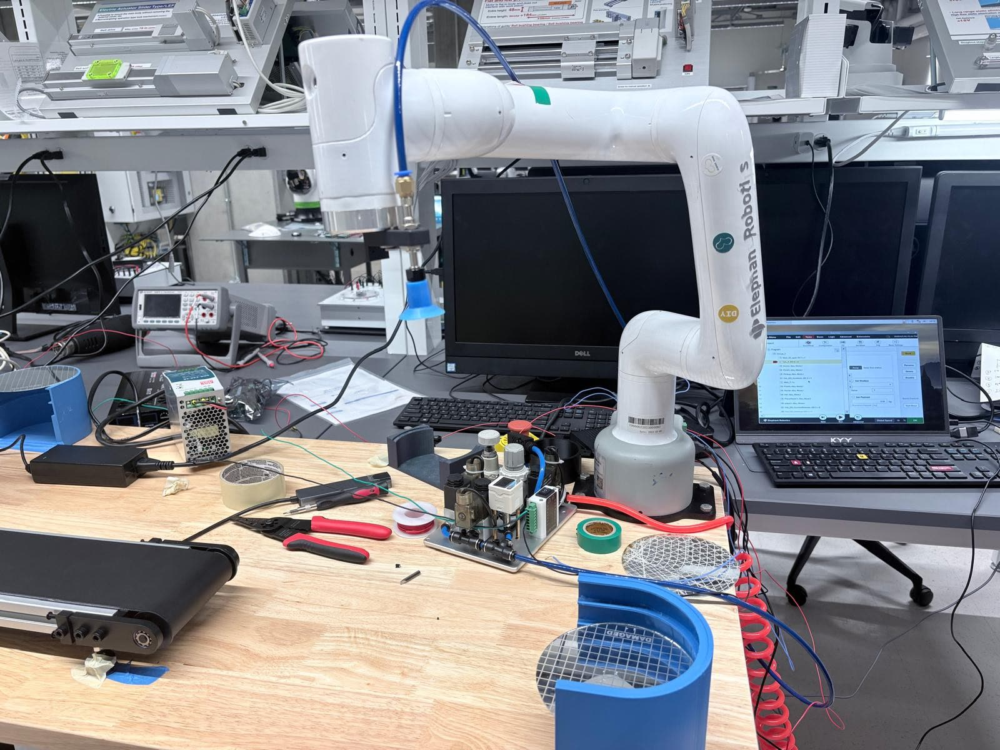
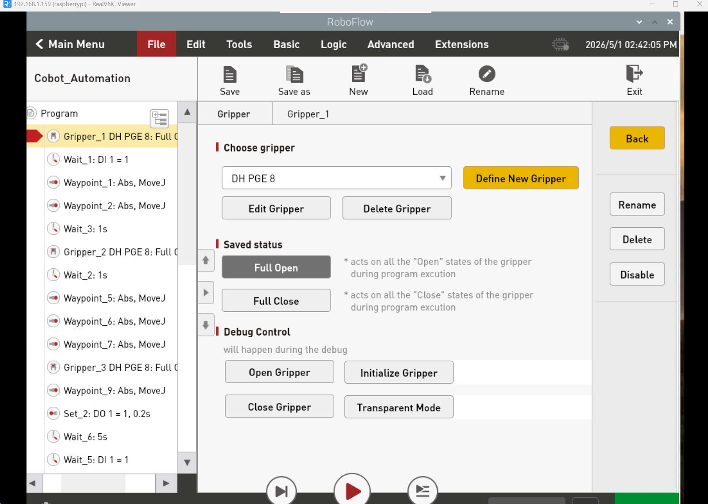
The original build used a DH PGE 8 electric parallel gripper with printed finger extensions. This one uses a vacuum tool, and that's more than a hardware swap. A parallel gripper is a two-state device the controller commands directly. The vacuum tool is a pneumatic circuit: a filter-regulator, two 24 V solenoid valves for suction and blow-off, and a digital vacuum switch whose output is the only proof that a wafer is really being held. So the grip becomes something measured instead of something assumed. For a fragile part that's a clear improvement, though it does add a need for compressed air the gripper never had.
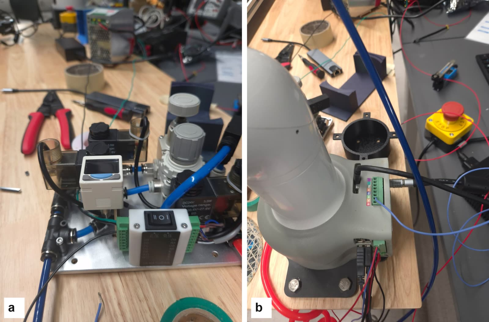
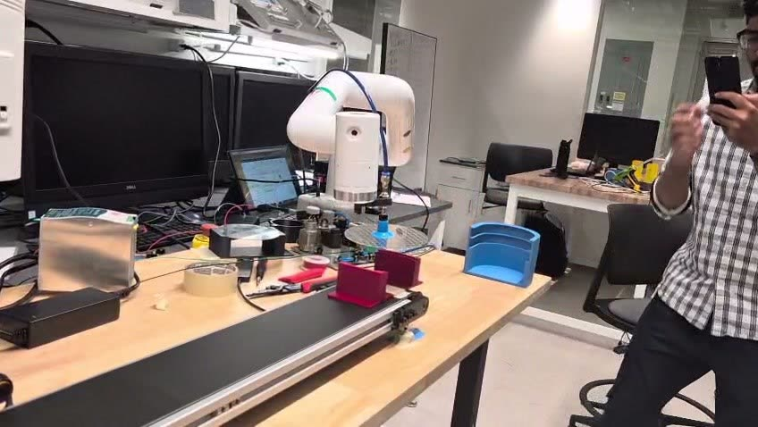
A panel, a screen, and a wafer count sent one pulse at a time.
The Micro820 runs the operator interface as well as the coordination logic. There's a physical panel with a run switch, four inputs, four output lamps and a 0 to 10 V analog meter, and a supervisory screen that adds start and stop buttons, a wafer counter, and live lamps for the start input, both analog sensors, both robot triggers and both conveyor outputs.
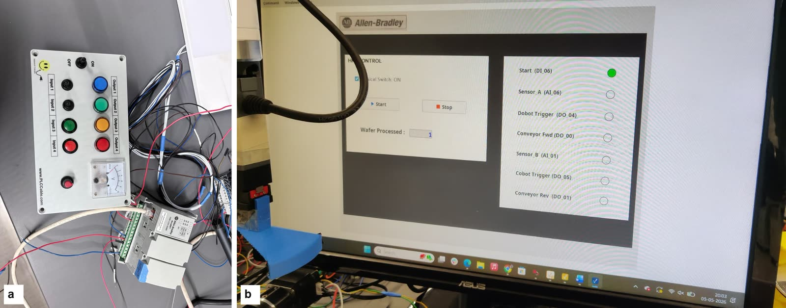
The counter is worth a closer look. On the arm's side the wafer count is a proper integer, but the only line to the PLC is one digital output that pulses once per wafer. So what really crosses between the two is a string of pulses that the PLC counts up again. Sending the count as an actual number would need a Modbus holding register. I marked the spot in the arm program where that belongs and left it for later.
Learning the panel before anyone touches it
Before the cell was wired up for real, the trainer panel was modelled in three.js with every terminal and conductor labelled. That let us walk through the I/O map, and argue about it, without a live 24 V rail in the room.
Nominal timing
These are settings, not measured cycle times. Together they put the coordination overhead at about seven seconds per wafer, on top of however long the motion itself takes.
| Constant | Where | Value |
|---|---|---|
| Trigger pulse width | PLC TP timers | 2.0 s |
| Cycle-done pulse width | SCARA program | 2.0 s |
| Cobot done pulse | RoboFlow Set block | 0.2 s |
| Belt run / settle dwell | conveyor script | 2.5 s |
| Camera settling delay | conveyor script | 2.0 s |
| Standalone pacing dwell | SCARA program | 3.0 s |
| Cobot pick allowance | sequencer | 5.0 s |
| Belt travel watchdog | sequencer | 20.0 s |
In integration work, the failure log is the result.
We logged fifteen real faults, each with its root cause and how it was fixed. A lot of them follow the same pattern: someone assumed what a signal did instead of measuring it, and the symptom pointed somewhere other than the real cause.
| Symptom | Root cause | Resolution |
|---|---|---|
| Motion calls raise "nil value" | Robot API binds only in the main thread's script | Keep all motion in that file |
| "Incorrect motion point" at the fixture | Only one IK branch is valid at 393.8 mm; solver chose the other | Command the fixture side in joint space |
| Same, intermittently elsewhere | An edited parameter left a coordinate undefined | Check for nil before suspecting reach |
| Cartesian jog cannot reach the fixture | Jogging will not cross a configuration boundary | Expected; hand-guide, then teach joints |
| Four cycles run for three wafers | Loop bounded by height, not by count | Derive the shelf height from the count |
| Traverse waypoint descends to shelf height mid-path | Pose taught at the wrong height | Raise J3 only, a pure screw move with the branch unchanged |
| Fork dips 2.7 mm entering the slot | Approach and inserted poses taught at different heights | Adopt the lower height for both |
| Wafer drags off the cradle | Deposit pose leaves prongs under the wafer | Add an explicit withdrawal pose |
| Start button does nothing at all | Stop wired normally closed but read as a normally-closed contact | Invert the contact form |
| cycle_done latches at the press, not at the report | Wrong contact form on the done input | Normally-open contact |
| Latch never releases | Seal-in rung with no break condition | Series break in the seal |
| Latch computed but unused | Nothing referenced the bit | Consume it in both rungs |
| Robot-done input never true | The point had no alias; a local of the same name was read | Alias the physical point |
| PLC absent from the browse tree | Link-local controller address | Put the adapter on 169.254.x.x |
| Detection stops working after a download | Analog threshold is not retained | Re-enter after every download |
Three lessons that apply well beyond this bench
- Keeping the same information in two forms catches mistakes neither would catch alone. Every taught joint pose sits next to its Cartesian equivalent, calculated at startup instead of copied by hand. That caught the traverse pose taught at shelf height, and the mismatch between the approach and inserted heights, before either one reached the hardware. It costs a few lines.
- The way a signal fails is something you design. The start signal is active high, so a dead wire means no request. The conveyor outputs sit high, so losing power stops the belt. The stop button is normally closed, so a cut wire counts as a press. None of that comes from the sensor conventions. Each one is a choice about which failure the cell should fall back to, and I made each one on purpose.
- A signal should last well past any doubt about when the receiver reads it. Two-second pulses against a millisecond scan mean nothing in this cell needs edge detection. The cost is throughput, and on a production cell I'd make the same argument with edge capture and an acknowledgement instead.
Four things it still can't do, and I'd rather say so.
- The deposit fixture is at 393.8 mm of a 400 mm reach. Commanding it in joint space makes the arm's configuration predictable, but it doesn't make the workspace any better behaved that far out. Moving the fixture 30 to 40 mm closer to the robot is the one change that would do the most to make the cell less fragile, and it would only take one session of re-teaching.
- The conveyor's positioning is open loop. The belt runs until a sensor sees the cradle, and exactly where it stops inside the detection window isn't controlled. That limits how precisely the cobot's pick pose can be set. An encoder on the drive, or a second sensor to time both edges, would tighten it up.
- The wafer count crosses between machines as pulses, not as a number. A Modbus holding register would send it as an integer and let the HMI show the arm's own count instead of the PLC's rebuilt version.
- The interlocking relies on procedure, not enforcement. The busy output that would keep the rest of the cell out of the arm's way is written and wired through the same guarded output helper as everything else, but it's switched off by default because its pin is assumed rather than measured. Turning it on against a confirmed terminal is the first safety improvement I'd make.
After those, the natural next step is using the inspection camera to line the wafer up and correct the cradle's pose before the cobot picks. That would stop the cell depending on the cradle being taped down in exactly the taught spot.
Credit where it's due. The wafer automation cell, its original commissioning and the lab manual that goes with it are the work of Sameerjeet Singh Chhabra, under the guidance of Dr. Sangram Redkar, in the RAS 598 Advanced Robotic Systems program at Arizona State University. The original team was Sameerjeet Singh Chhabra, Vishavjit Singh Khinda and Shao-Chi Cheng (upstream repository). The M1 Pro Lua port, the elbow-branch analysis, the ladder audit, the handshake design and the report on this page are mine, Prajjwal Dutta's, and @saidagit84 helped build and bring up the cell.